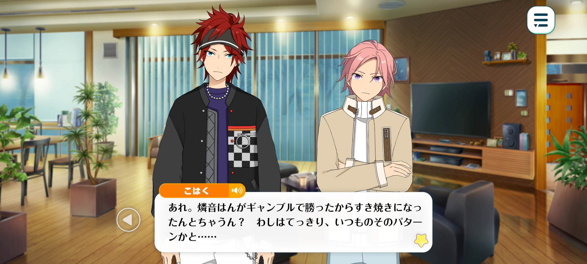
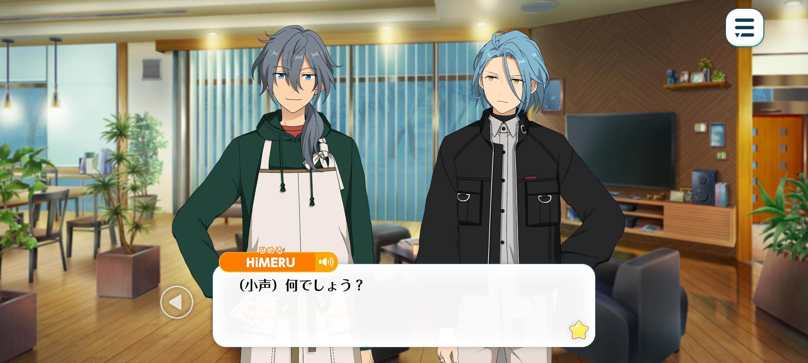
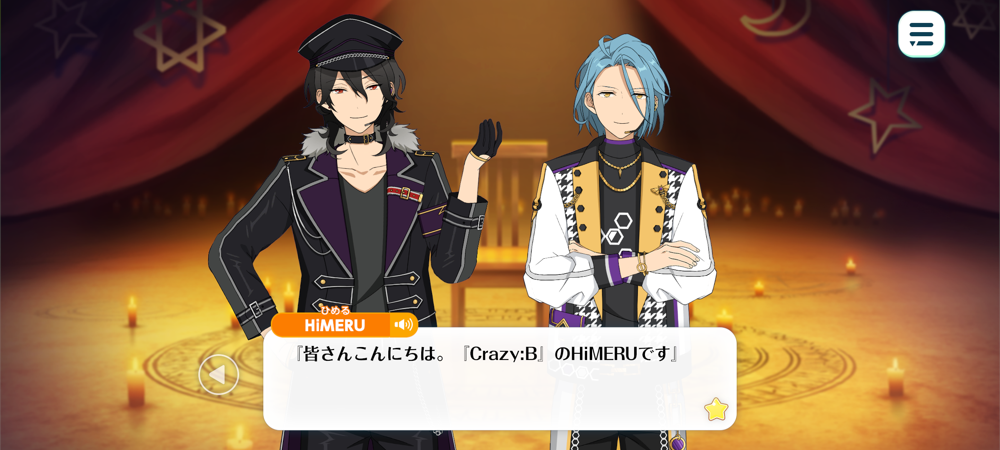

Scout! LUCKY SCRAMBLE
Fortunate Heartthrob – Chapter 9


Time: That night

Rinne: Oi, oi. New Year's already come and gone. What's all this on the dining table?
What're we celebratin', huh? Premium sukiyaki beef? That's some fancy eatin'.
Kohaku: Yeah. Rinne-han must've won it through gamblin', right? That's usually how these things go, ain't it...?
Niki: Fufu! ♪ Me and HiMERU-kun bought it!
(Whispering) Well, HiMERU-kun paid for the whole thing. He only let me pay him back half...
HiMERU: (Whispering) HiMERU would have been perfectly happy to cover the cost of the beef himself, provided you paid for the rest of your usual groceries, of course.
Niki: (Whispering) I can't let you do that! I'm the one who wanted to eat it, so there's no way I'm letting you pay for everything!
Kohaku: What're you two whisperin' about over there?
Anyway, what's the occasion for the sukiyaki? Somethin' good happen?
HiMERU: —You could say that.
While we were out shopping, HiMERU hoped to win the grand prize of premium beef that Shiina wanted...
Instead, HiMERU won the fourth-place prize, which was an electric kettle. It was still a rather good prize.
Rinne: That's barely an explanation. I'm askin' why you went outta your way to buy expensive beef in the first place, Merumeru.
Niki: Hey! I paid for it too!
Rinne: Shut it. Ain't nobody doubtin' that you paid for food.
...I can just imagine how bummed out Niki must've been when you didn't win the beef. So that's why you went and bought some anyway, huh?
HiMERU: How terribly presumptuous...
Is it really so strange for HiMERU to want to fulfil Shiina's wish of having a sukiyaki party with the rest of Crazy:B?
Rinne: Hell yeah, it's strange. You're not exactly the kinda guy who'd do somethin' like that, Merumeru.
HiMERU: —Then, let's just say that even HiMERU has days when he wants to enjoy sukiyaki with everyone.
Rinne: Well that's a first.
Kohaku: ...Woah, this is pretty neat. You can set it to heat the water to whatever temperature you want.
HiMERU: Oh, really?
Fumu. It is the latest model, after all. You can even keep the water warm, and the temperature is displayed here. That's quite convenient.
Rinne: ...Tch. Way to dodge the question.
Kohaku: I can make us some tea straight away. Why don't we have a cup while we wait for the food?
...~♪
Niki: Nahaha. You're really enjoying that kettle, aren't you, Kohaku-chan~?
Kohaku: I'm impressed by how far water-heatin' technology's come. Here ya go, Niki-han.
Niki: Thanksies! The food'll be ready soon, so I'll enjoy this while I wait.
Kohaku: And here's yours, too.
HiMERU: Thank you, Oukawa.
Rinne: Gracias, Kohaku-chan… oya?
Take a look at this, Merumeru. The tea stalk's standin' upright! That's a good omen, ain't it? Looks like I'm gonna have some good luck... ☆
Kohaku: I was gonna say I'm happy for ya, but… I think you're only lucky if someone else tells you the stalk's standin' upright, though.
Rinne: Haa~? Everybody forget I said anythin'!

Niki: (Whispering)...HiMERU-kun.
HiMERU: (Whispering) What is it?
Niki: (Whispering) How's your tea? Quite a lot's happened today, huh?
HiMERU: (Whispering) HiMERU's tea is... normal. Perfectly normal, delicious green tea brewed by Oukawa.
Niki: (Whispering) Oh yeah? Does that mean your good luck has finally run out?
HiMERU: (Whispering) Yes. HiMERU certainly hopes so.
Rinne: There you two go again, whisperin' away. What's all the big secret about?
HiMERU: There isn't one. Shiina was simply asking HiMERU what we'd like to eat after the sukiyaki.
...Ah, what a wonderful aroma. HiMERU rather enjoys these peaceful moments.
HiMERU would quite like to start eating already—
Time: A few days later
Location: Back at the recording for the fortune-telling variety show

Rei: Well, well! It's that time of the week again, when we ask the question: Idol-san, Can I Read Your Fortune? ♪
And, just like last time, our guest is none other than the idol HiMERU-kun! ♪
HiMERU: Good evening everyone. This is Crazy:B’s HiMERU.
Rei: Now, speaking of HiMERU-kun, I'm sure you all remember the rather astonishing fortune he received from the white rabbit, Inaba-kun, last time.
So, since then, what sort of good fortune have you experienced? Both our audience and I are absolutely dying to hear! ♪
HiMERU: Of course... The most fortunate thing to have happened to HiMERU since Inaba-san's fortune-telling was—
—That the four members of Crazy:B were able to enjoy a delicious sukiyaki dinner together.
Rei: ...Oya? If I recall correctly, HiMERU-kun experienced some rather extraordinary strokes of luck beyond that.
HiMERU: Indeed. Many other things happened, but HiMERU deliberately chose to talk about the happy evening he spent with his unit members instead.
Whether it's with family or friends... Isn't spending time together with the people dear to you what happiness is all about?
HiMERU is sure many of our viewers have experienced something similar: those moments when you're simply enjoying the company of others.
Rei: (Hmm? Is that really how he feels, or is he simply saying what he thinks the audience wants to hear...?)
...In any case, it seems HiMERU-kun has experienced quite a few fortunate events! ♪
Now then, what sort of fortune-telling should we try on HiMERU-kun next time? I wonder how things will turn out!
HiMERU: ...You jest. Surely next week's guest should be an idol other than HiMERU, Sakuma-senpai.
These twelve minutes have already provided HiMERU with more than enough memorable experiences.
Rei: Kukuku. It was only a joke, I assure you! ♪
...Incidentally, on this programme, every idol who has their fortune told is asked to share their impressions of the experience.
Having been through so many unusual events, would you mind sharing a few words with us?
HiMERU: ...In that case, HiMERU has something he'd like to say to all of you.
No matter how fortunate an event may seem, each person has their own way of experiencing and interpreting it. That's something HiMERU has come to realise.
You may experience good fortune, or you may experience misfortune. Ultimately, HiMERU believes it's up to each individual to decide what those experiences mean to them.
—So, everyone. Please cherish the peaceful moments you get to spend each day, free from worry.